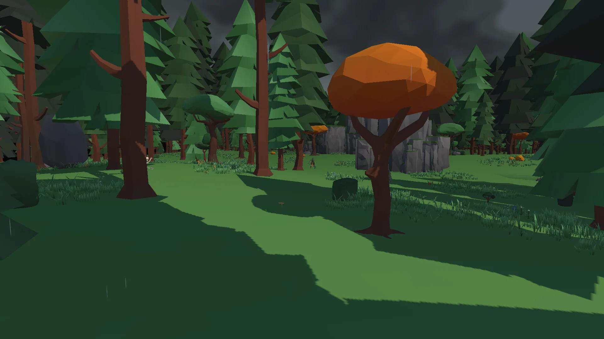
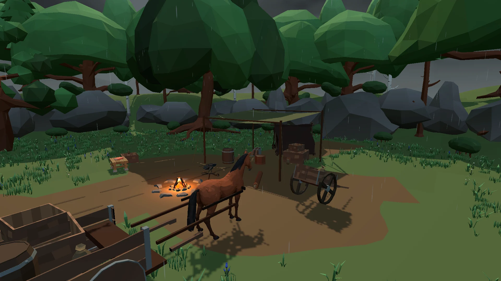

기억으로 이어지는 액션 로그라이트
잠들지
않는 숲ROOTBOUND
쓰러져도, 숲의 이야기는 끝나지 않습니다.
잊힌 검술을 엮어 나만의 싸움을 완성하세요.
어떻게 싸우나요? ↗
실제 게임 화면01 — 숲의 문턱기억 · 선택 · 계승
3D 액션 로그라이트로우폴리 다크 판타지Windows · 싱글 플레이제작 C0D3X
숲이 다시 깨어날 때
같은 숲.
다른 기억, 다른 전투.
마을로 물자를 운반하던 평범한 여행자가 검은 안개 속에 갇힙니다. 손에 남은 검술의 기억과 길목에서 만난 까마귀가, 숲 아래 잠든 진실로 당신을 이끕니다.
무엇을 장착하고 어떤 기억을 연결할지, 보상을 위해 어떤 위험을 받아들일지. 매번의 선택이 다음 싸움의 모습을 바꿉니다.
숲의 이야기를 읽어보세요 →가장 깊은 곳에서 기다리는 존재
이 숲에는
잠들지 못한
이유가 있습니다.
몬스터를 쓰러뜨리는 것만이 여정의 끝은 아닙니다. 숲을 지켜 온 존재와 그 안에 남은 기억을 마주했을 때, 이 길의 의미가 달라집니다.
숲의 존재들 만나보기 ↗사진은 실제 게임 모델을 사용한 연출 촬영입니다.
숲에 남겨진 이야기
돌아갈 길을 찾다가,
남겨진 기억을 만나다.
이야기는 영웅의 부름이 아니라, 마을로 향하던 작은 마차에서 시작됩니다.

잠시 비를 피하는 자리에서 시작되는 여정
숲의 길잡이
까마귀는
얼마나 알고 있을까요?
까마귀는 성장을 돕는 존재이자, 숲의 사연을 조금씩 들려주는 길잡이입니다. 나뭇가지에 앉은 검은 새는 지하에서 옅은 하늘색 환영의 모습으로 다시 나타납니다.
대화를 거듭하고 더 깊은 곳으로 나아갈수록, 흩어져 있던 이야기들이 하나로 이어집니다.
숲과 심층
빛이 닿는 숲에서,
뿌리가 잠든 곳까지.
8개 전투 장으로 이어지는 여정. 야영지와 두 번의 기억 제련소는 그 사이에 놓인 쉼표입니다.
길 밖의 길
물살을 따라가면
어디에 닿을까요?
여울목의 강은 배경이 아닙니다. 깊어지면 수영하고, 거센 물살에는 몸이 휩쓸립니다. 서쪽 폭포 아래에는 숨겨진 침수 수로가 기다립니다.
숨은 길을 탐험한 뒤 폐허 마을로 합류할 수 있습니다. 정상적인 다리 경로와는 다른 선택입니다.
미로 안의 작은 세계
복도 너머에는
어떤 방이 있을까요?
일반 미로에는 아홉 가지 주제의 방이 섞여 등장합니다. 철창과 작은 방, 열주와 회랑이 공간을 나누고 벽의 횃불이 길을 비춥니다.
원형 미로는 별도의 환형 구조입니다. 위 방들이 모두 한 번에 나오거나 원형 미로에도 등장하는 것은 아닙니다.
전투와 성장
공격을 잇거나,
한 순간에 쏟아내거나.
검술의 기억과 성장 트리를 조합해 나만의 전투 리듬을 만드세요.
세 갈래, 하나의 빌드
기억의 성장
세 트리에 함께 투자할 수 있습니다. 보조 성장은 해당 트리의 메인 노드를 먼저 배워야 하며, 공용 능력치 성장도 별도로 마련되어 있습니다.
한 번의 도전, 다음 도전
실패해도 남는 것이 있습니다.
기억 도감
칼은 하나여도,
싸움의 형태는 다릅니다.
22가지 검술의 기억. 희귀도나 속성이 아닌 무게와 공격 방식으로 선택합니다.
새 도전의 기본 기억은 ‘회전 베기’입니다. ‘일격 축적’을 배우면 2~4번 슬롯이 잠기고, 그곳에 장착했던 기억은 기억 인벤토리로 돌아갑니다.
장비 도감
발견하고, 감정하고,
나의 것으로.
무기 15종과 방어구 300종, 반지 2종의 외형을 살펴보세요. 모든 몬스터가 같은 장비를 떨어뜨리지는 않습니다.
01장비 획득몬스터별 전리품
02감정잠든 추가 옵션 공개
03재추첨 또는 분해원하는 빌드로 정리
성능은 등급·품질·감정 옵션과 성장에 따라 달라집니다. 고정 수치로 오해하지 않도록 도감에는 외형과 분류를 표시합니다. 무기 강화 시스템은 사용하지 않습니다.
숲의 존재들
숲은 당신을
그냥 보내주지 않습니다.
날쌘 적과 무거운 적, 방패와 마법을 쓰는 적. 거리와 준비 자세를 읽고 싸워야 합니다.
그리고, 더 낯선 존재들.
뒤틀린 늑대와 나무 정령, 포자에 잠식된 주민 등 숲의 변화를 닮은 존재들이 여정을 가로막습니다. 네임드는 더 위협적인 전투와 무작위 기억 보상으로 탐험의 목표가 됩니다.
심층의 수호자
잠들지 않는 뿌리
거대한 몸체만큼이나 다양한 공격을 펼치는 최종 보스. 거리에 따라 근접 공격과 투사체를 섞고, 싸움이 깊어질수록 연속 공격과 환경의 위협이 겹칩니다.
- 첫 대면내려찍기, 휘두르기, 씨앗과 뿌리 파동
- 뒤틀린 저항연속 내려찍기와 어퍼컷 연계, 달라지는 공격 리듬
- 드러난 기억열린 중심부, 황금빛 씨앗과 원거리 압박
보스의 정체 보기 · 이야기 스포일러
몸통 안에 남아 있는 해골은 이전 세대의 수호자입니다. 그를 마주하는 일은 단순한 처치가 아니라, 끝나지 않던 계승의 의미를 알아가는 일입니다.